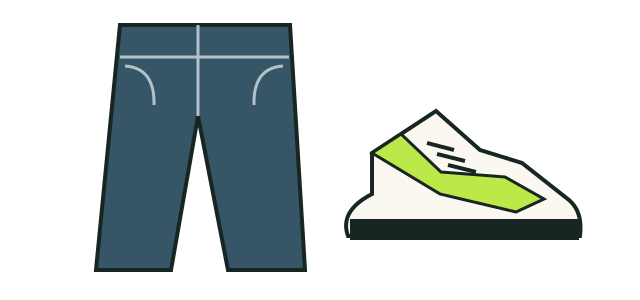

01 / STREETWEAR
01 / STREETWEAR
A starting point, not a rule
Start with your sneakers.
Try your white tee with relaxed jeans and statement sneakers. Pick up one sneaker color in an accessory, or keep the rest simple. Use what you own; make it yours.
Illustrated styling idea. Jeans and sneakers are not products for sale here.
Try the neutral demo shop →